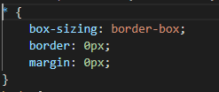
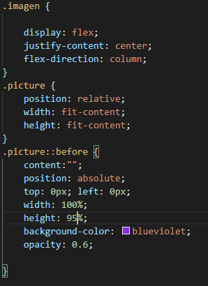
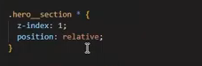

Apuntes de Maquetacion del Video - Live Coding NUCBA
Apuntes del CSS:
- En el inicio del CSS se reseteó todos los margenes y paddings de todos los selectores a cero, y aplicó la forma de los tamaños de los conteinedores a que incluya los bordes.

- :root {
--darkblue: #131354;
} -> Se creó la variable --darkblue para todo el archivo css, y su valor es el #131354
- background: var(--darkblue); -> llama el valor de la variable.
- display: flex
- Si flex-direction es row, justify content es horizontal y align-items es vertical.
- Si flex-direction es column, justify-content es en la vertical y align-items es en la horizontal.
- Max-width -> No deja que el width del elemento, clase o id, pase del valor especificado - Es interesante para el responsive
- Min-width -> No deja que el width del elemento disminuya mas que el valor especificado - Es interesante para el responsive
- Pseudo elemento ::before para aplicar un overlay en un imagen -> Ej. una section con clase .imagen: se aplica primero un position relative al section en CSS
para que el elemento before encuentre su elemento padre. Si no tiene ningun position, va a aparecer despues de body. Ejemplo abajo:
- De esta forma, el pseudo pseudo-elemento ::before, estilizando un color y un opacity, con width 100%, height 100%, position:absolute, y agregando un position: relative al section, obtemos el overlay en violeta. Tenemos que agregar el position:relative al elemento .imagen para que tome este elemento padre como referencia al pseudo elemento ::before, con position: absolute.

- El atributo z-index:1 indica que en el plano z, tiene priorodad el elemento/clase/id que tiene este estilo. Entonces este se pone adelante del elemento posicionado en el mismo lugar.
